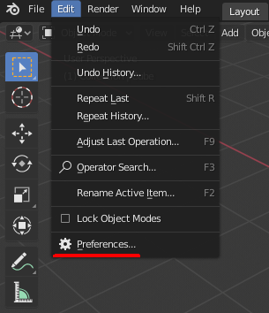
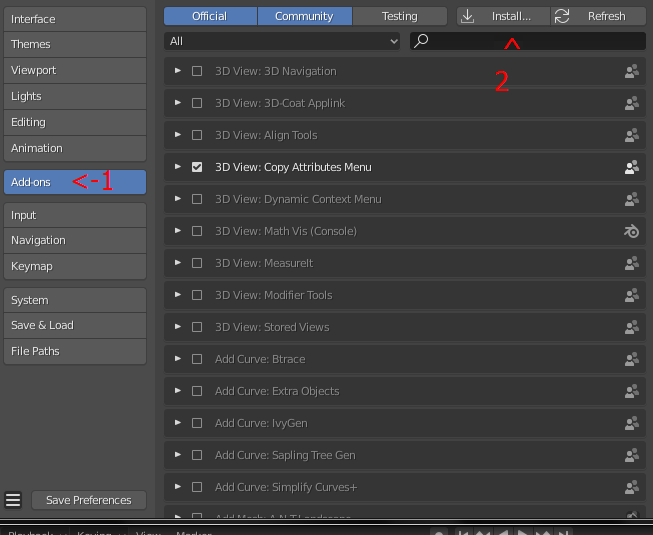
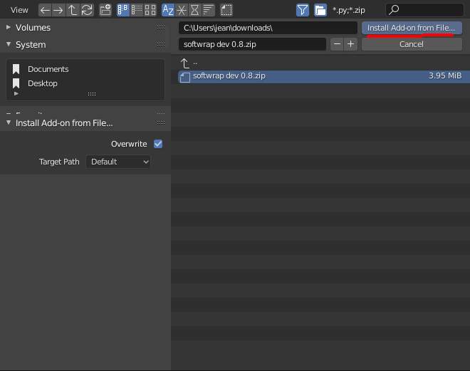
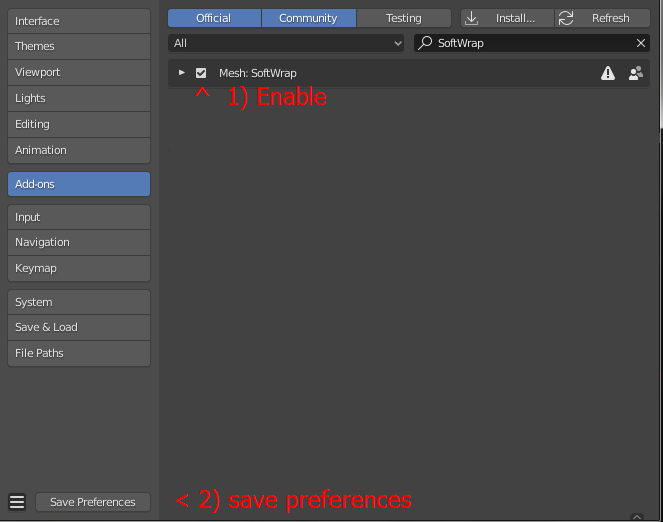

Installation
This addon should come in a zip file form, the name of this file may vary depending of which version it is. and Installing addons in blender is quite simple you just need to follow these steps:
Steps
- Skip this step if you are installing Softwrap on Windows.
If you are installing the addon on linux and get the following error, just install the matching python version to blender's python on your system. this error happens because blender for some reason dont come with a necessary library in its bundled python but installing the same python version on the system though your preffered package manager should also install the necessary library.
ImportError: libpython3.7m.so.1.0: cannot open shared object file: No such file or directory
for example, installing python through apt using the following command:
sudo apt-get install python3.7
if the package is not available, you can install it from an ppa such as the popular deadsnakes ppa.
sudo add-apt-repository ppa:deadsnakes/ppa
sudo apt-get update
sudo apt-get install python3.7
-
Open blender.
-
In the
editmenu, Go toPreferences
 -
Go to
Add-onsand click install
 -
now select the zip file and hit
install add-on from file...
 -
Enable it and save the preferences.
 -
That's all.
Compatibility
Softwrap is currently fully compatible with Windows and Linux. a macos build is also available but its untested and not guaranteed to work properly so please don't rely on it.
You probably deserve a explanation of why macos is not fully supported... Its because macs unfortunatelly too expensive and I cant afford one so I can only make builds remotely but not test the addon on a real mac.